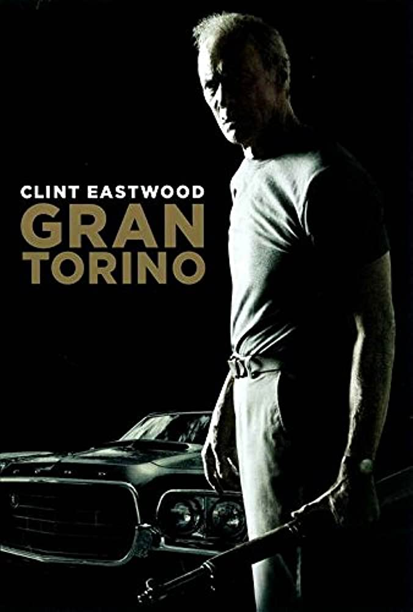

<html>
    <head>
        <title>css</title>
        <link rel="stylesheet" type="text/css" href="estilosGT.css">
    </head>
</html>
<body>
    <ul>
        <li class="active"><A href="index.html">Regresar</A></li>
        <li><A href="whiplash.html">whiplash</A></li>
        <li><A href="TaxiDR.html">Taxi Driver</A></li>
    </ul>
</body>


<div>
<center>
    <div class="imagen">
        
    </div>
    <p class="textopelicula1">
        Gran Torino es una película estadounidense de género dramático del año 2008, dirigida, producida y protagonizada por Clint Eastwood. La película marcó el regreso de Eastwood a un papel estelar después de cuatro años; su último papel estelar había sido en la película Million Dollar Baby en el año 2004. Gran Torino cuenta con un elenco predominantemente Hmong, así como la actuación del hijo menor de Eastwood, Scott Eastwood, y del hijo mayor, Kyle Eastwood en la banda sonora. La película se estrenó en algunos cines de Estados Unidos el 12 de diciembre de 2008, más tarde en el resto del país el 9 de enero de 2009 y el 6 de marzo.3
    </p>
    </center>
    <center>
    <video controls>
        <source src="GTV.mp4" >
    </video>
    </center>
    <button> <span>Añadir a Favoritos</span></button>
</html>
</div>